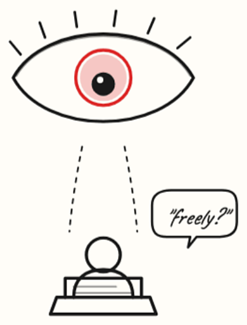
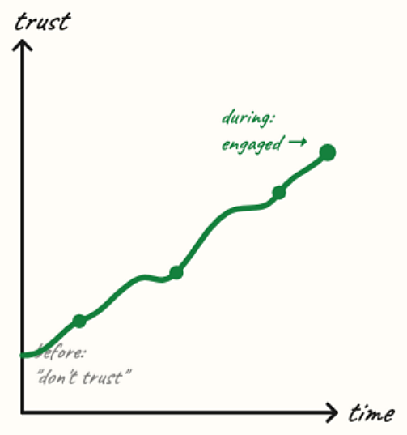
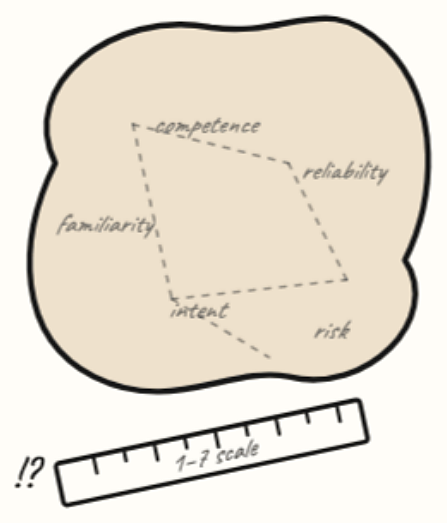
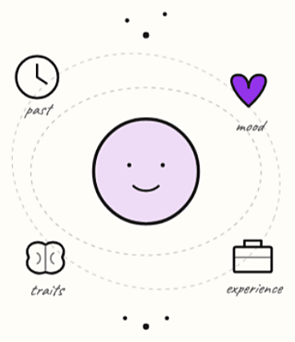

In one of our studies on SPARC, a browser extension that helps people read the news with an AI assistant, we noticed something surprising. People who said they don't trust AI in general still used the extension to learn more about the news they were reading. They used it about as much as everyone else, and they even asked the same kinds of questions. Why?
A caveat first: only about 11% of our participants said they didn't trust AI at all, and everyone was recruited online through Prolific. So treat this as an interesting pattern, not a final answer.
I have a couple of hypotheses

1. Study design
Even though participants were told to use the extension freely, they may have felt obligated to use it more. But that alone doesn't explain why the amount and type of use were similar across trust levels.
2. The domain of the task at hand
Reading the news is exploratory. Participants may simply have been curious and wanted more information, and using AI for that is low-risk.

3. The design of the extension
Maybe they don't trust AI in general, but specific features of SPARC helped them engage. This suggests trust changes during an interaction, rather than being something we can capture by asking about it beforehand.

4. Trust measurement
A single survey question can't fully capture something as complex as trust.

5. Other factors
Personal characteristics, past experiences, and other things we didn't measure.
What I take from this
Each of these could explain part of the result, and I think they're all worth exploring further. But thinking through them led me to a broader idea. Rather than treating trust as the goal, we should focus on designing credible agents: tools that show where their answers come from, so people can judge them for themselves.